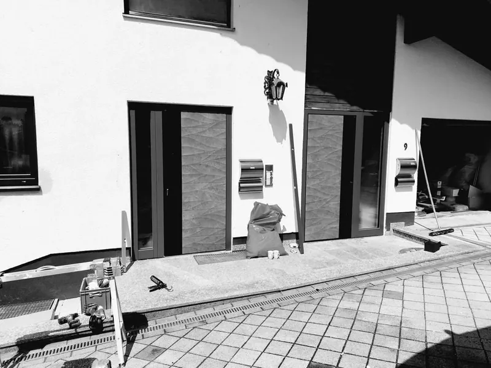

Haustüren
Eine stimmige Ansicht für Ihren Eingang. Farbe, Verglasung, Griff und Ausstattung werden als Ganzes betrachtet.
Türen
Eine Tür kann einladend sein, Räume verbinden und Privatsphäre schaffen. Gemeinsam finden wir eine Lösung, die in Gestaltung, Funktion und Bedienung zu Ihnen passt.

Durchdacht bis ins Detail
Eine stimmige Ansicht für Ihren Eingang. Farbe, Verglasung, Griff und Ausstattung werden als Ganzes betrachtet.
Drinnen und draußen verbinden. Wir prüfen Öffnungsart, Platzbedarf und die Einbausituation an Ihrem Übergang.
Für den passenden Abschluss im Innenbereich. Mit abgestimmten Oberflächen, Zargen und Beschlägen.
Persönlich geplant
Zeitlos zurückhaltend oder mit einem markanten Detail: Wir stimmen die Tür auf Fassade und Fenster ab. Dabei behalten wir auch Lichtbedarf, Privatsphäre und Pflege im Blick.
Verriegelung, Beschlag, Verglasung und fachgerechte Befestigung müssen zusammenpassen. Welche Ausstattung für Ihren Eingang sinnvoll ist, besprechen wir persönlich.
Zugänglichkeit, Öffnungsrichtung und Bedienung sind Teil unserer Planung. Niedrige Schwellen sind abhängig von Konstruktion, Anschluss und örtlicher Situation zu prüfen.
Gut zu wissen
Grundsätzlich ja. Vor Ort prüfen wir Maße, Wandanschlüsse und den Zustand der vorhandenen Konstruktion. Daraus ergibt sich der erforderliche Umfang der Arbeiten.
Wir stimmen Farben, Oberflächen und Gestaltung mit Ihnen ab. Die konkrete Auswahl hängt von den verfügbaren Produktsystemen ab.
Von der Idee zum Projekt
Vier Produkte. Viele Möglichkeiten. Stellen Sie Ihr Projekt in wenigen Schritten zusammen – als Grundlage für unser persönliches Gespräch.
Wählen Sie den Schwerpunkt Ihres Projekts.
Ungefähre Maße genügen. Das genaue Aufmaß übernehmen wir vor Ort.
Diese Angaben nehmen Sie direkt in Ihre Anfrage mit.
Erzählen Sie uns von Ihrer Idee. Wir kümmern uns um den nächsten Schritt.